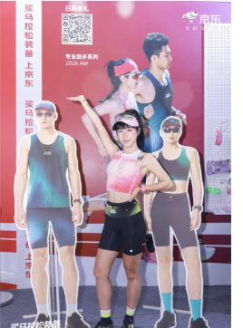
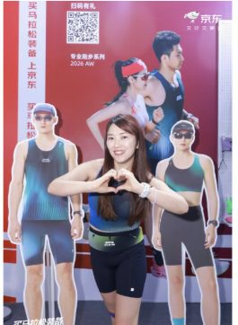
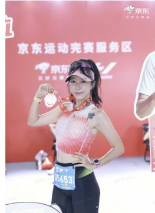
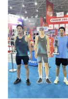

Keep × 京东运动
614 贵阳马拉松赛事合作
新品未上市就进赛场：30 位专业跑者、90 篇种草笔记、一场「内容—体验—交易」的完整闭环。 我在其中负责达人种草全链路、官方内容规划与项目统筹。
跑者只信跑者
背景：三线交汇的机会点
产品侧——Keep 专业跑步线新品（KPB 风洞背心）上市在即，急需在跑者人群建立「专业」心智；场景侧——贵阳马拉松聚集全马/半马高浓度跑者；渠道侧——京东运动是贵马金牌赞助方，手握赛事资源，618 大促同期具备交易承接能力。
人群洞察
跑者的装备决策高度依赖真实跑者背书——垂类达人实测比品牌广告更有说服力；备赛决策前置 1-2 周，赛中/赛后是情感共鸣高峰；磨腋下、闷汗、晃动是跑者服饰的明确痛点，与新品卖点一一对应。
关键判断
不做单点曝光，做闭环：小红书种草（内容场）× Keep App 站内（自有场）× 京东会场/POP 店（交易场）× 线下展位（体验场）四场联动。
内容—体验—交易闭环
以赛事为锚点：达人真实实测内容打心智，官方账号节奏化传播扩声量，京东渠道资源承接转化。
达人种草全链路
招募 → 筛选
撰写并发布「联合跑团」招募笔记，报名 135 人；按粉丝体量、账号数据权重、IP 属地三维标准筛选出 30 位全马/半马跑者（筛选率 22%）。
Brief → 内容
制定达人 brief：三大内容方向（完赛集锦 / 备赛攻略 / 产品实测）+ 卖点口语化转化要求 + 拍摄穿着规范 + 话题与评论区运营规则，90 篇笔记零违规返工。
发布 → 转化
每人 2 篇：赛前种草（6.8-6.10）+ 赛后回顾（必含展位打卡）；衔接京东拍单与好评沉淀，拍单率 100%、好评 60 条。



补给站突发：新品断档危机
种草产品 KPB 是未上市新品，需提前协调工厂赶工尺码数量。负责 KOL 对接的同事未及时同步服饰信息，导致与供应链敲定时只明确了 KOC 部分——KOL 种草出现时间卡点。
冲刺：数据墙
30 位达人 · 人均 3 篇




终点复盘
✓ 做对了
选人逻辑成立（在地+数据权重，90 篇零返工）；节奏前置（种草卡赛前窗口，赛后情绪承接）；闭环完整（种草→拍单→好评→站内再触达，PV/UV 暴增验证「内容即流量」）。
↗ 可以更好
官方账号自然流量弱（4 篇总曝光 1 万），叠加薯条投放可再放大；达人端可加「爆款钩子」引导（PB 故事、破三叙事）；跨部门信息同步应建立共享文档机制。
⧉ 可复制经验
「垂类赛事 + 在地达人 + 电商拍单」的组合模式可复制到任何区域赛事与垂类新品上市场景：锁定人群浓度最高的场景，用在地达人生产真实内容，用电商完成交易闭环与口碑沉淀。